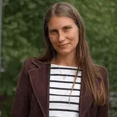
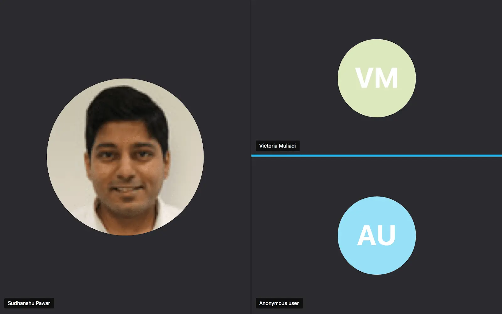
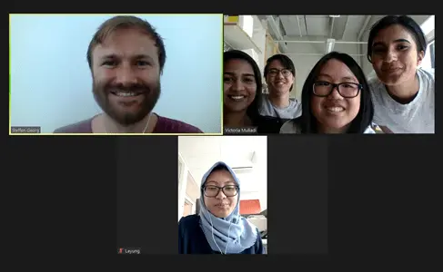
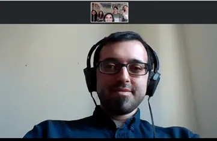
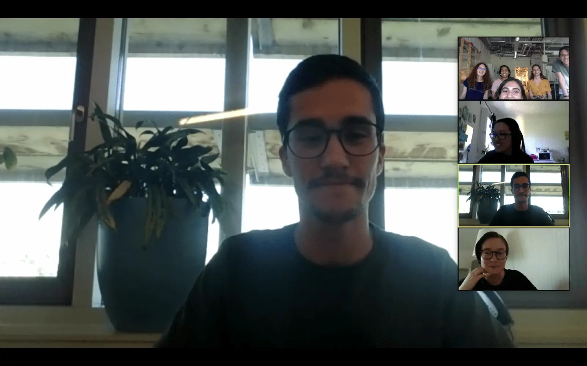
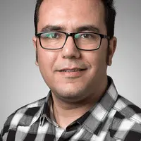

Rakel Wreland Lindström
Associate professor in fuel cells, Division of Applied Electrochemistry, KTH Royal Institute of Technology
During the early stages of our project development, we focused on finding solutions to the environmental problems associated with electricity production. After some brainstorming, we settled on the idea of using microbial fuel cells (MFCs) as a sustainable method of producing electricity. To gain some insight into this area, we contacted Rakel Wreland Lindström, who specialises in fuel cell research.
Rakel mentioned that using MFCs to generate power is not very feasible as they usually produce very small currents. Based on her input, we changed the direction of our project from using MFCs to generate electricity to using them as biosensors. Biosensors do not require a large electrical output to function and could potentially be used to solve an environmental problem, which was the core aim of our project.

Emma Vincent
Researcher in aryl hydrocarbon receptor toxicity, Institute of Environmental Medicine, Karolinska Institute
But which kinds of compounds should our biosensor detect? Through our meeting with Emma Vincent, a researcher focusing on integrative toxicology, we discovered that persistent organic pollutants (POPs), such as PCBs and PFAS, are an emerging problem both in aquatic environments and for human health, as they are toxic and bioaccumulating compounds.
Emma suggested that a good biosensor should have high specificity (to differentiate different congeners), sensitivity and good detection range. A quantitative output could be implemented for ease of analysis. As we will be using bacteria to detect these compounds, she also recommended us to assess the toxicity of the compounds in bacteria and any mixed response from the bacteria when different types of pollutants are present simultaneously.
From Emma's feedback, we decided to develop a detection system targeting POPs, specifically PCB and PFOS. We also conducted viability assays using these compounds on our strains to assess the maximum concentration that our strains can survive in and generate a response.
Sudhanshu Pawar
Researcher in the Department of Energy and Resources, Unit of Bioprocesses and Environmental Services, RISE (Research Institutes of Sweden)
We discussed our project design with Sudhanshu including the sensitivity of our promoters to detect PFOS and PCB. We also discussed potential benefits and challenges with using electrical signalling as our detection output rather than fluorescence. Although fluorescence could help to simplify our project design, we concluded that the benefits of pairing our modular design with electricity as a signal output enabled a read-out less limited by the sensitivity of the machinery used for read-out. Furthermore, he suggested the BRENDA enzyme database which proved useful for the modelling part of our project.

Steffen Georg
PhD candidate researching on bioelectrochemical systems, Wetsus, European Centre of Excellence for Sustainable Water Technology
As we were developing the design of our fuel cell, we contacted Steffen who provided us insight into alternatives for bioelectrochemical systems. We discussed differences between a microbial electrolysis cell (MEC) and a microbial fuel cell (MFC), and the implications of implementing each of them into our project. Given the aim of our project, we received confirmation that the microbial fuel cell was more suitable for our needs. Subsequently, he recommended us to measure the output from the MFC using a potentiostat and to detect the current using cyclic voltammetry. For developing the MFC, providing 2 compartments for each bacterial strain would help our idea. Moreover, vitamins and minerals should be added into the feed solution for optimal bacterial growth. Based on his input, we designed our MFC to be a 2 compartment system, each for S. oneidensis and E.coli.

Martin Gustafsson
Assistant professor, research within metabolic engineering and industrial microbiology, Division of Industrial Biotechnology, KTH Royal Institute of Technology
Martin gave us valuable input into the modelling aspects of our project. Our meeting focused on the metabolic pathways of Shewanella oneidensis, utilising the KEGG PATHWAY database to compare potential substrate options for our strain. We established that when supplied with lactate as primary substrate, S. oneidensis would direct the metabolism in the pathway resulting in electricity production. In our final MFC experiments we did in fact use lactate as the primary substrate source for S. oneidensis.
Jonatan Martin Rodriguez
Senior research specialist, Department of Microbiology, Tumor and Cell Biology, Karolinska Institutet
To understand how Shewanella oneidensis works and how to optimise growth conditions for our strains, we contacted Jonatan Martin Rodriguez, specializing in the field of bacterial physiology. He provided us with protocols for conjugation and electroporation of our S. oneidensis strain and our meeting inspired us to think a step further in terms of the conditions that our bacterial strains will be subjected to in wastewater and the Baltic sea. We discussed how the concentration of salts in the aquatic environment where our product will be implemented may affect the growth of our strains.

João Pereira
PhD candidate focusing on the optimization of bioelectrochemical systems, Wetsus, European Centre of Excellence for Sustainable Water Technology
We had several meetings with João during our experimental journey and he gave us valuable insight into the optimization of biofilm growth in our fuel cell. At this stage our setup was quite theoretical and we had concerns regarding the time it would take for our biofilm to develop as our literature research suggested a time frame of several months. In our meeting with João we discussed several parameters that may affect the electrical output and biofilm formation such as the level of substrate added to the media as well as flow rates of the media in and out of the MFC. The first meeting with João helped us plan a more concrete approach to our fuel cell setup and we quickly realised the importance of substrate availability for electrical output after receiving our first results from the MFC. We also kept the flow rate constant in our MFC as per his suggestion.

Amirreza Khataee
Postdoc researcher in flow cell systems, Division of Applied Electrochemistry, KTH Royal Institute of Technology
In order to put our theoretical research on MFCs into practice, we contacted Amirreza who quickly became one of our advisors. Not only did he provide us with the practical setup to carry out our MFC experiments, he also provided us with valuable suggestions on how to optimize the measurement of our electrical signal. Based on his recommendation, we opted to measure changes in voltage instead of changes in current, by applying a constant resistance to the system.



.png)